- 年份
- 2023.06.29
- 品类
- 城市艺术型生活区
- 做了什么
01 / 思路
三套方向，各有一组关键词
提案给了三套方向。第一套从项目里的城堡建筑出发；第二套的关键词是浪漫、梦幻、百老汇；第三套的关键词是现代、休闲、欢乐。


02 / 系统
方案一与方案二：城堡和字母 B
方案一以现实中的城堡主视图为原型绘制图形，突出它的独特和好认，配色是橙红、浅粉、米白和黑。方案二把字母 B 画成一朵粉色的花，延展到“城市艺术型生活区”的主画面和楼层导视。

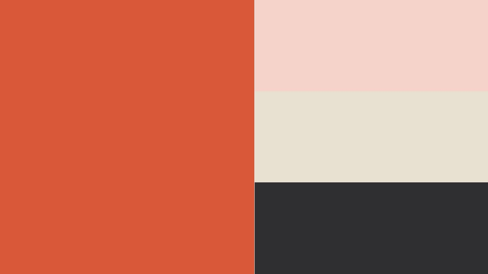
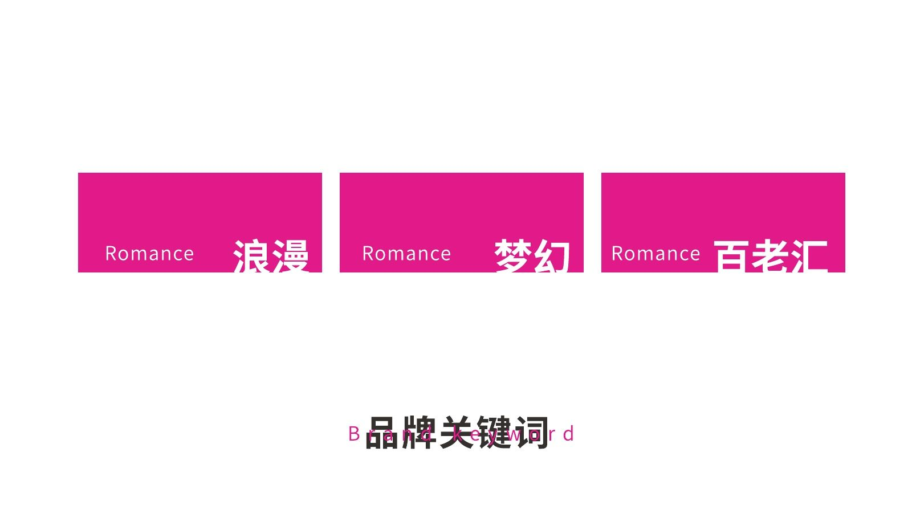
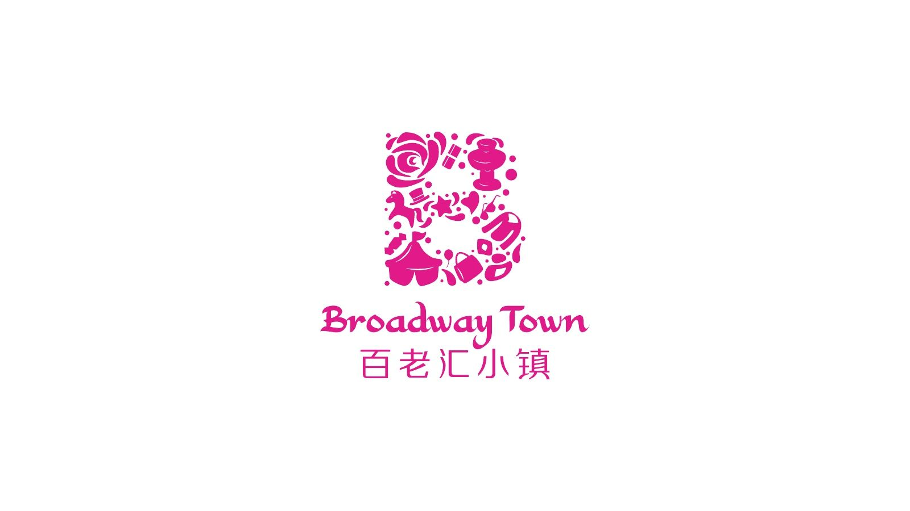
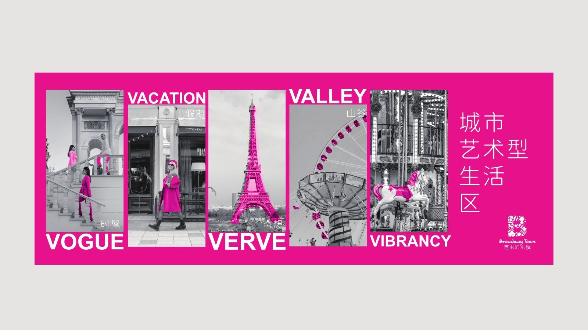
03 / 系统
方案三：手写 Town 与《星空》的蓝黄
方案三用手写体的 Town 做字标，色彩从梵高《星空》里取出深蓝和黄，再配上三维人物主视觉。
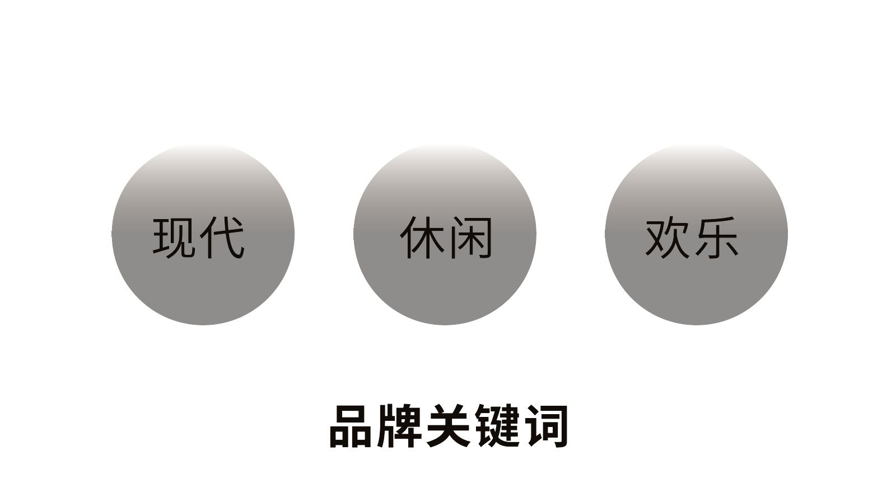
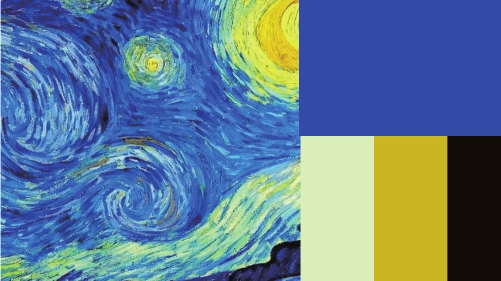
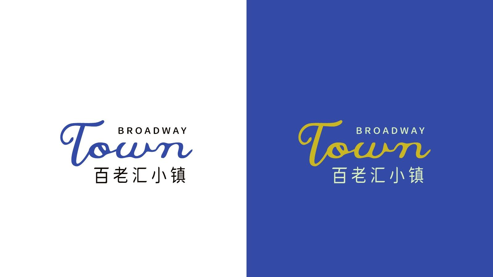
04 / 落地
大屏、广告牌和导视
三套方案都放进了真实场景里看：建筑外墙大屏、户外广告牌和楼层导视。
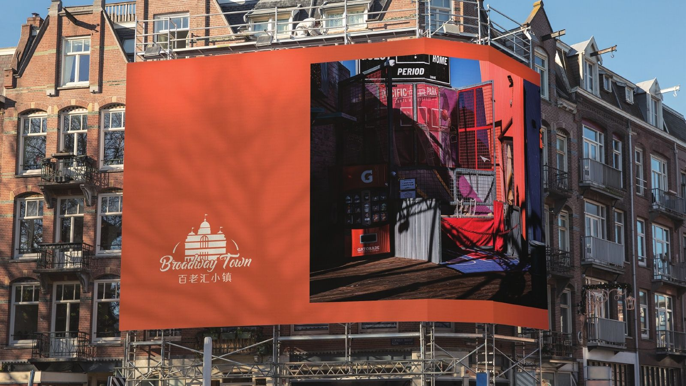
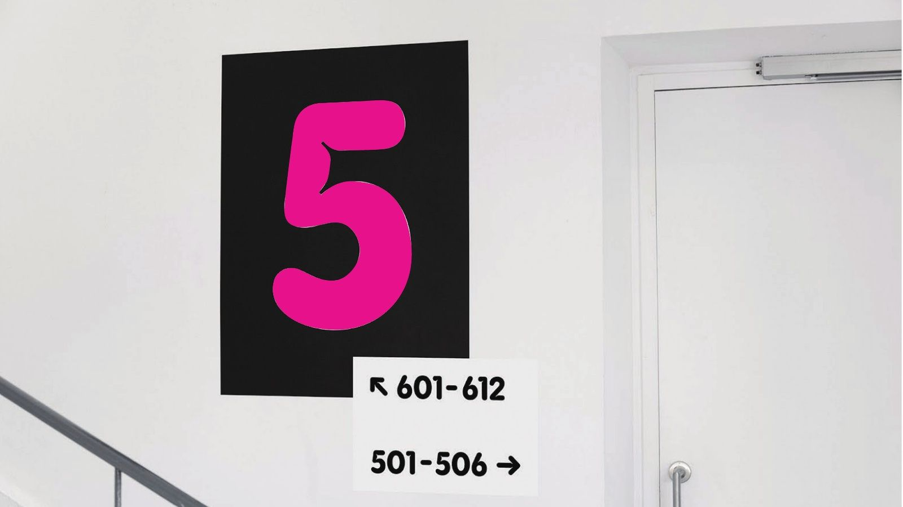
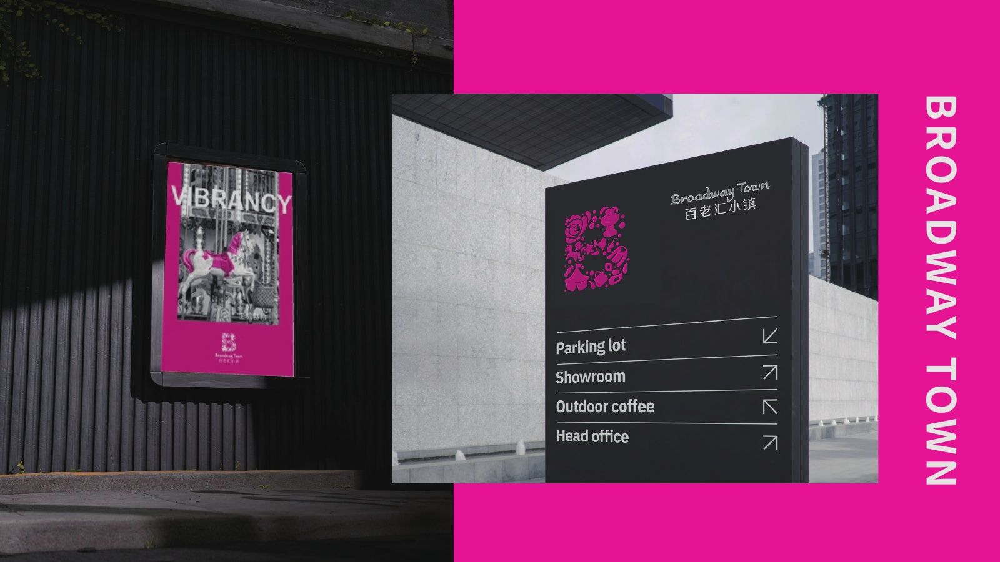
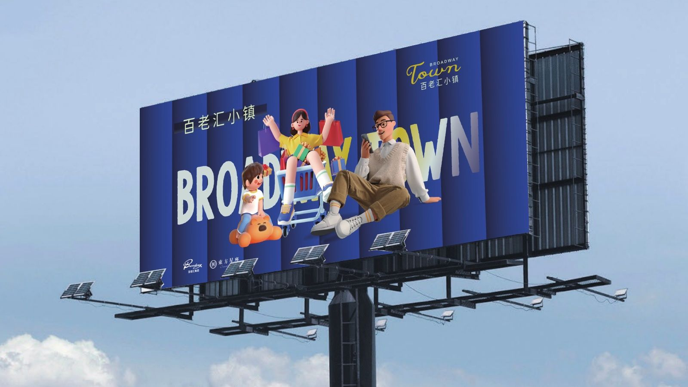